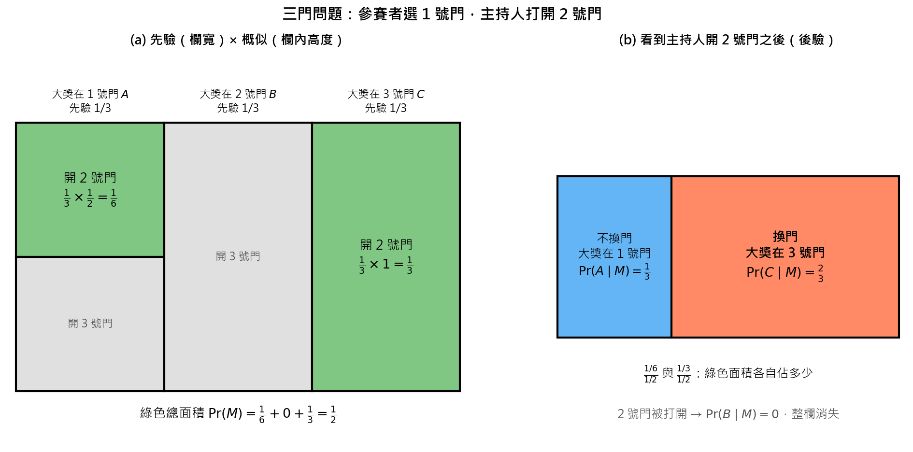

Monty Hall Problem (三門問題：主持人的行動也是資訊)#
1. Background (背景描述)#
三門問題（Monty Hall problem）是一個源自美國電視遊戲節目的經典機率悖論，名字來自節目《Let’s Make a Deal》的主持人蒙提·霍爾（Monty Hall）。
遊戲規則#
初始選擇：參賽者面前有三扇關著的門。其中一扇門後面是汽車（大獎），另外兩扇門後面各是一隻山羊。參賽者先挑一扇門（例如 1 號門），這扇門保持關閉。
主持人的行動：主持人知道每扇門後面是什麼。他會刻意從剩下的兩扇門中，打開一扇有山羊的門（例如 2 號門）。
最終決策：場上剩下兩扇關著的門（參賽者選的 1 號門、沒被打開的 3 號門）。主持人問：「你要堅持原本的選擇，還是換到另一扇門？」
直覺會說「剩兩扇門，各 50%，換不換都一樣」。但主持人開門不是隨機的，他的行動本身就帶有資訊。
2. Rule 101 (問題設定)#
事件定義#
符號 |
意義 |
|---|---|
\(A\) |
大獎在 1 號門 |
\(B\) |
大獎在 2 號門 |
\(C\) |
大獎在 3 號門 |
\(M\) |
參賽者選 1 號門後，主持人打開 2 號門 |
假設（題目通常隱含）#
參賽者選 1 號門（三扇門對稱，不失一般性）
主持人知道大獎位置，一定開一扇「參賽者沒選、而且沒有大獎」的門
若有兩扇門可開，主持人隨機各以 \(\frac{1}{2}\) 的機率選一扇
已知條件#
先驗：大獎隨機放在三扇門之一
概似：在大獎位置不同時，主持人打開 2 號門的機率
大獎位置 |
主持人能開的門 |
\(\Pr(M \mid \cdot)\) |
|---|---|---|
1 號門 \(A\) |
2 號或 3 號都是山羊，隨機選 |
\(\Pr(M \mid A) = \frac{1}{2}\) |
2 號門 \(B\) |
不能開有大獎的 2 號門 |
\(\Pr(M \mid B) = 0\) |
3 號門 \(C\) |
只剩 2 號門可開 |
\(\Pr(M \mid C) = 1\) |
所求#
換到 3 號門後贏得大獎的機率 \(\Pr(C \mid M)\)。
檢查假設#
\(A, B, C\) 互斥且涵蓋所有可能，所以分母可以用全機率公式拆成三項。
3. Solution: Bayes』 Theorem (求解：貝氏定理)#
3.1 證據的總機率 \(\Pr(M)\)#
3.2 換門的獲勝機率 \(\Pr(C \mid M)\)#
3.3 不換門的獲勝機率 \(\Pr(A \mid M)\)#
結論：換門贏的機率是 \(\frac{2}{3}\)，是不換門（\(\frac{1}{3}\)）的 2 倍，應該換門。
用「面積 = 機率」畫出來：欄寬是先驗、欄內高度是概似，綠色是「主持人開 2 號門」。看到 \(M\) 之後只留下綠色，再看各自佔多少。

4. Review (復盤)#
4.1 檢查：後驗加總為 1#
4.2 為什麼不是各 50%#
你的門沒有被更新：不論大獎在哪，主持人一定開得出一扇山羊門，所以「有山羊門被打開」對 1 號門沒有提供資訊，\(\Pr(A \mid M) = \Pr(A) = \frac{1}{3}\)。
被更新的是另外兩扇門：2、3 號門原本合起來有 \(\frac{2}{3}\) 的機率。主持人知道答案、刻意避開大獎，把 2 號門排除後，這 \(\frac{2}{3}\) 全部集中到 3 號門。
「剩兩扇門所以各 50%」錯在把兩扇門當成對稱的，但一扇是你隨機選的，另一扇是主持人篩選後留下的。
4.3 用次數來看：玩 300 次#
參賽者每次都選 1 號門：
大獎位置 |
次數 |
主持人開的門 |
堅持 1 號門 |
換門 |
|---|---|---|---|---|
1 號門 |
100 |
2 號或 3 號 |
贏 |
輸 |
2 號門 |
100 |
3 號 |
輸 |
贏 |
3 號門 |
100 |
2 號 |
輸 |
贏 |
合計 |
300 |
贏 100 次（\(\frac{1}{3}\)） |
贏 200 次（\(\frac{2}{3}\)） |
4.4 改變假設會怎樣：主持人不知道答案#
若主持人不知道大獎位置，隨機打開 2 或 3 號門，剛好開到山羊（事件 \(M'\)）：
大獎位置 |
\(\Pr(M' \mid \cdot)\)（隨機開 2 號門且是山羊） |
|---|---|
\(A\) |
\(\frac{1}{2}\) |
\(B\) |
\(0\)（開 2 號門會看到大獎） |
\(C\) |
\(\frac{1}{2}\)（2 號門是山羊，但他也可能開 3 號門） |
這時換不換真的都是 50%。差別完全來自概似 \(\Pr(M \mid C)\)：知情的主持人「被迫」開 2 號門（機率 1），不知情的主持人只是碰巧（機率 \(\frac{1}{2}\)）。
4.5 頻率學派 vs 貝氏學派#
頻率學派：重複很多次實驗，大獎在 3 號門的比例是 \(\frac{1}{3}\)，不使用主持人開門的資訊。
貝氏學派：把「主持人打開 2 號門」當作新證據，更新成 \(\frac{2}{3}\)。
4.6 延伸：四扇門#
四扇門、主持人打開兩扇山羊門時，不換門 \(\frac{1}{4}\)、換門 \(\frac{3}{4}\)，見 hw3 Question 1。
4.7 用到的公式#
名稱 |
公式 |
|---|---|
全機率公式 |
\(\Pr(M) = \sum_{i \in \{A, B, C\}} \Pr(M \mid i)\Pr(i)\) |
貝氏定理 |
\(\Pr(C \mid M) = \dfrac{\Pr(M \mid C)\Pr(C)}{\Pr(M)}\) |